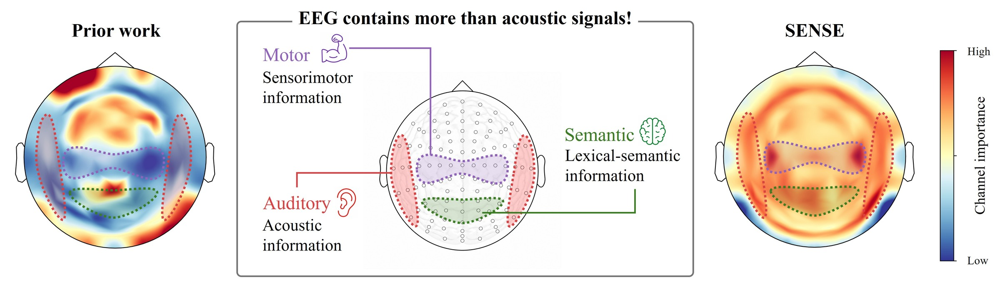
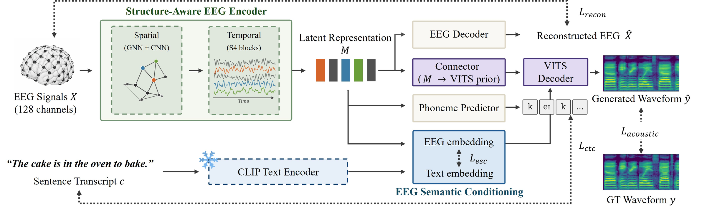
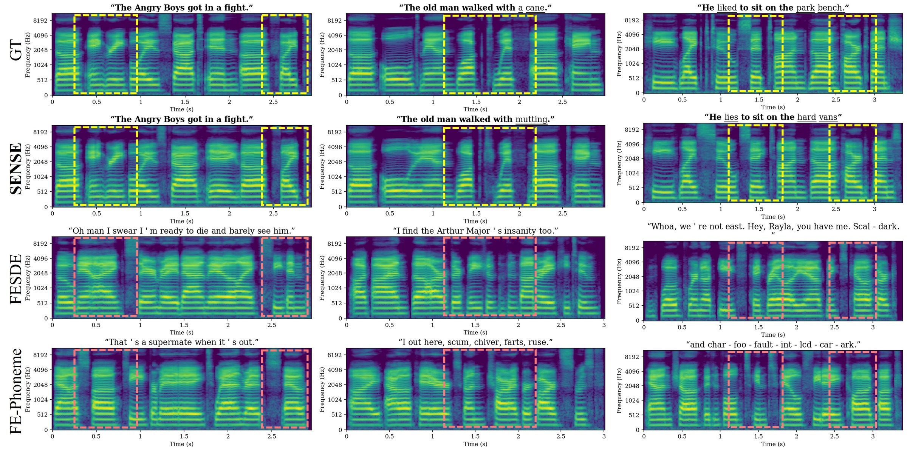
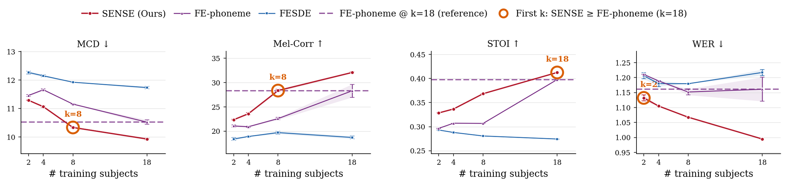
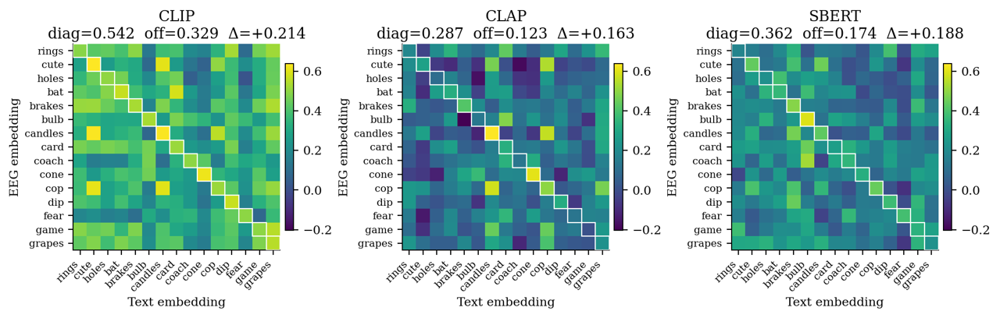
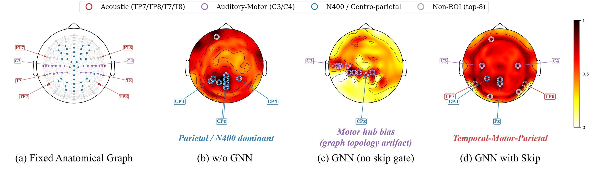

EEG-to-speech has been treated as an acoustic problem. We show the brain signal carries meaning too — and that using it changes what the model can do.
¹Chung-Ang University, South Korea · ²University of Birmingham, United Kingdom
* Work done during a research visit to the University of Birmingham. † Corresponding author.

The idea
Every EEG-to-speech model so far optimizes waveform fidelity: make the audio look right and hope the words follow. They don't. You get speech-shaped sound with the wrong words in it.
We think the framing is wrong. EEG recorded while someone listens carries semantic information, not just acoustic — and the standard benchmark hands you a way to use it. The N400 corpus pairs each sentence frame with either a congruent or an incongruent final word, precisely to isolate semantic processing. Prior models train on both identically, throwing that structure away.
SENSE changes two things. It treats the 128 electrodes as a graph over their real scalp geometry instead of an unordered feature vector, and it aligns the EEG latent to a frozen CLIP text embedding using congruent trials only — the trials where the brain response actually reflects coherent understanding of the word.
Unseen-subject split — participants the model never trained on. Averaged over 5 seeds.
Listen
No text, no guided sampling — brain activity in, waveform out. Every clip comes from a participant the model never trained on. Transcriptions are Whisper-large, with matching words in bold.
These are best-scoring examples. The first, third, and fourth are the same trials shown as spectrograms in Figure 3 below.
“The old man walked with a cane.”
Whisper on SENSE output: “The old man walked with mutting.”
“On one hand I have five fingers.”
Whisper on SENSE output: “On one hand, I have five ears.”
“He liked to sit on the park bench.”
Whisper on SENSE output: “He lies to sit on the hard vans.”
“The angry boys got in a fight.”
Whisper on SENSE output: “The Angry Boys got in the fight.”
“He shut the door.”
Whisper on SENSE output: “He shust the poor.”
“He wore a cast because his arm broke.”
Whisper on SENSE output: “He wore a bass, he does his arm up”
Method

Results
Three test conditions on the N400 corpus: held-out sentences (Audio), held-out participants (Subject), and held-out both. Semantic metrics use congruent trials only. Five seeds.
| Model | Split | MCD ↓ | Mel-Corr ↑ | STOI ↑ | WER ↓ | BERT-R ↑ | CLIP-Sim ↑ |
|---|---|---|---|---|---|---|---|
| FESDE | Both | 11.80 ±0.12 | 19.87 ±1.97 | 0.2785 | 1.2186 | 0.0381 | 0.7557 |
| FE-Phoneme | Both | 10.52 ±0.08 | 28.29 ±1.34 | 0.3979 | 1.1610 | 0.0428 | 0.7509 |
| SENSE | Both | 10.44 ±0.10 | 31.18 ±0.60 | 0.3996 | 1.0186 | 0.0852 | 0.7654 |
| FESDE | Audio | 11.71 ±0.04 | 19.14 ±0.47 | 0.2792 | 1.2125 | 0.0289 | 0.7601 |
| FE-Phoneme | Audio | 10.73 ±0.06 | 26.53 ±0.30 | 0.3918 | 1.1360 | 0.0602 | 0.7554 |
| SENSE | Audio | 10.44 ±0.01 | 28.50 ±0.24 | 0.4039 | 1.0375 | 0.0959 | 0.7601 |
| FESDE | Subject | 11.73 ±0.04 | 18.70 ±0.29 | 0.2744 | 1.2171 | 0.0269 | 0.7587 |
| FE-Phoneme | Subject | 10.65 ±0.02 | 26.90 ±0.08 | 0.3806 | 1.1231 | 0.0564 | 0.7555 |
| SENSE | Subject | 9.928 ±0.03 | 32.07 ±0.14 | 0.4126 | 0.9948 | 0.1088 | 0.7647 |
The gap is widest on the unseen-subject split — the hardest one, and the one that matters for a real BCI. That suggests SENSE learns what the stimulus was rather than who the participant was. Note also that WER stays near 1.0 throughout: the relative gains are large, the absolute intelligibility is not. This is not a solved problem.

Cross-subject generalization
Train on k participants, test on two the model has never seen. The dashed line is the best baseline trained on all 18. SENSE passes it on WER at k=2, and catches up on the acoustic metrics by k=8.

What matters
Every component earns its place. Removing semantic conditioning costs the most on the semantic metrics; removing phoneme supervision costs the most on intelligibility.
| Model | Ch.Att | GNN | Skip | CTC | ESC | MCD ↓ | Mel-Corr ↑ | STOI ↑ | WER ↓ | BERT-R ↑ | CLIP-Sim ↑ |
|---|---|---|---|---|---|---|---|---|---|---|---|
| SENSE | ✓ | ✓ | ✓ | ✓ | ✓ | 9.93 ±0.03 | 32.07 ±0.14 | 0.4126 | 0.9948 | 0.1088 | 0.7647 |
| w/o ESC | ✓ | ✓ | ✓ | ✓ | ✗ | 10.34 ±0.03 | 29.43 ±0.27 | 0.4016 | 1.0323 | 0.0763 | 0.7601 |
| w/ shuffled ESC | ✓ | ✓ | ✓ | ✓ | shuf. | 10.38 ±0.04 | 29.25 ±0.28 | 0.4002 | 1.0385 | 0.0721 | 0.7595 |
| w/o CTC | ✓ | ✓ | ✓ | ✗ | ✓ | 10.50 ±0.01 | 27.24 ±0.27 | 0.3721 | 1.0488 | 0.0588 | 0.7624 |
| w/o CNN Skip | ✓ | ✓ | ✗ | ✓ | ✓ | 10.40 ±0.01 | 29.64 ±0.25 | 0.3970 | 1.0306 | 0.0724 | 0.7579 |
| w/o GNN | ✓ | ✗ | ✗ | ✓ | ✓ | 10.11 ±0.02 | 29.54 ±0.22 | 0.3951 | 1.0355 | 0.0788 | 0.7577 |
| w/o Ch.Att | ✗ | ✓ | ✓ | ✓ | ✓ | 10.24 ±0.01 | 29.08 ±0.16 | 0.4046 | 1.0170 | 0.0926 | 0.7639 |

Analysis
The channel gate starts with a small positive bias on auditory electrodes and zero everywhere else. Nothing favors sensorimotor or centro-parietal channels. After training, the auditory prior is down-weighted and C3/C4 — motor cortex — light up.

This lines up with a known result — that passive listening engages sensorimotor cortex — and supports the premise that EEG-to-speech benefits from channels outside auditory regions. We read these as model-internal diagnostics, not neural source localization. Saliency maps have well-documented limits.
Honest limitations